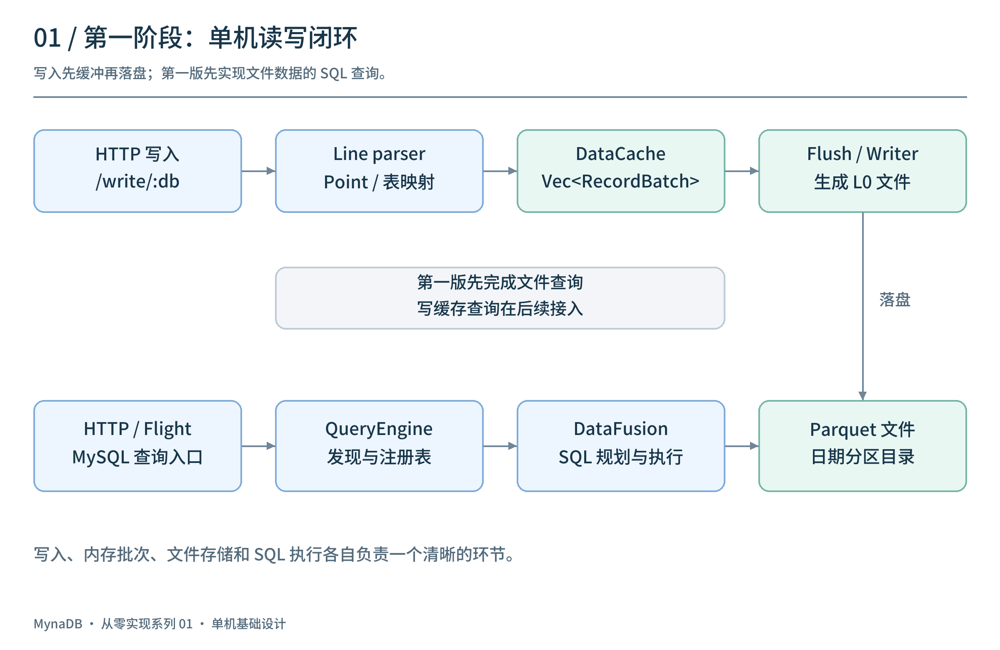
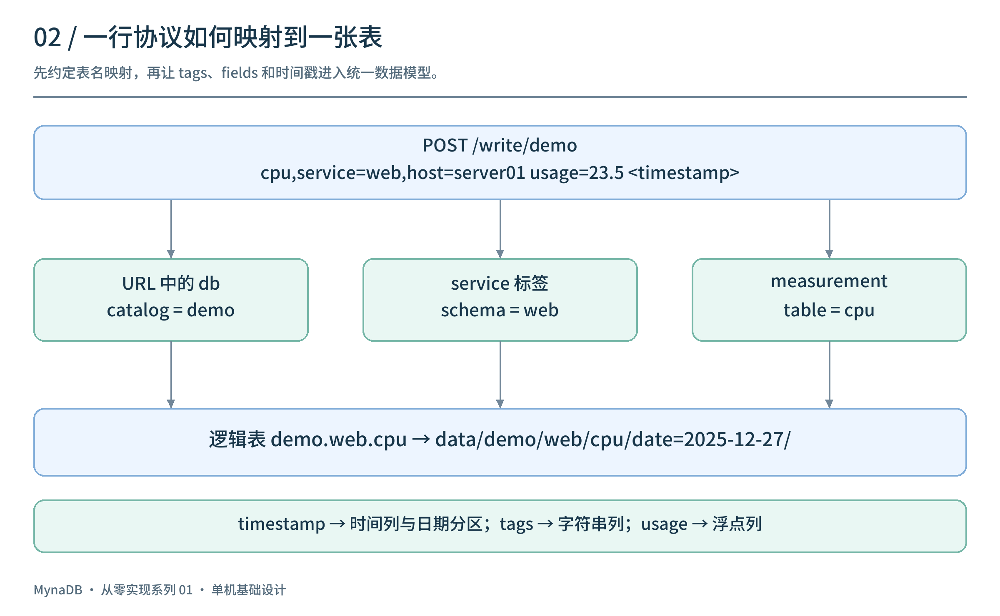
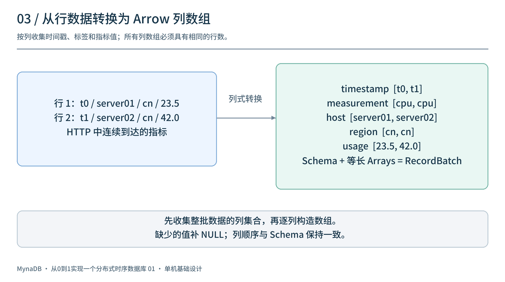
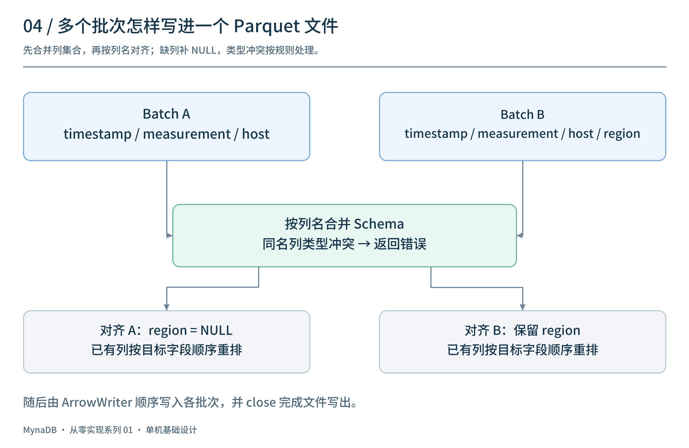
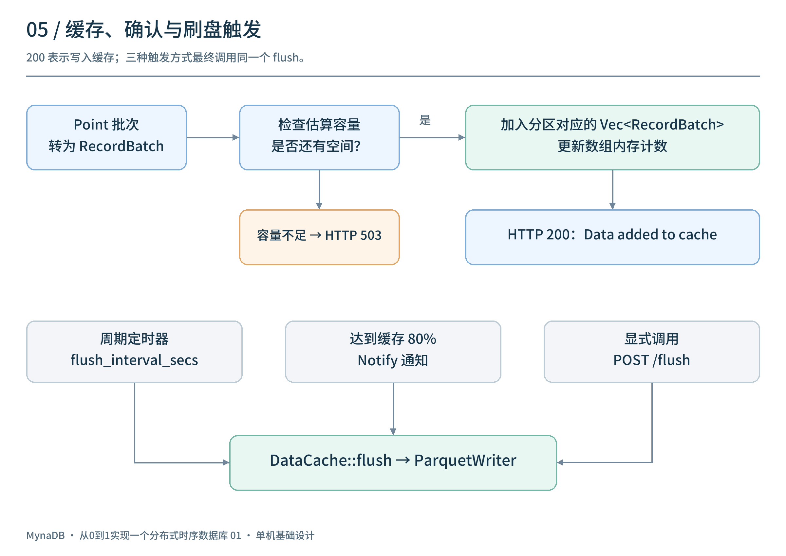
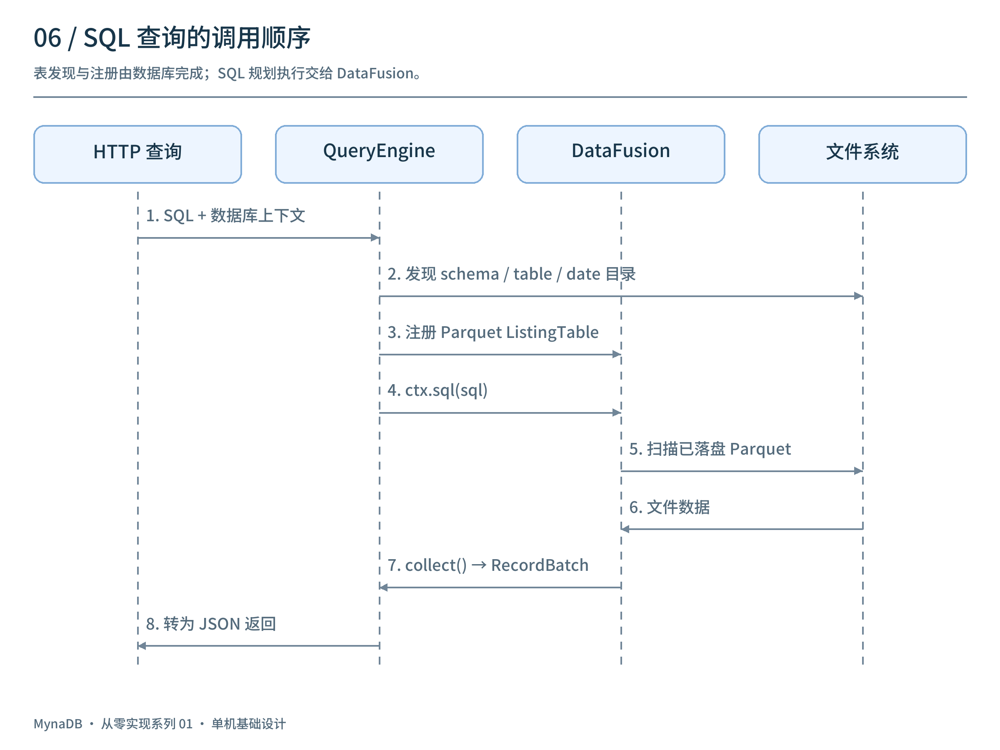
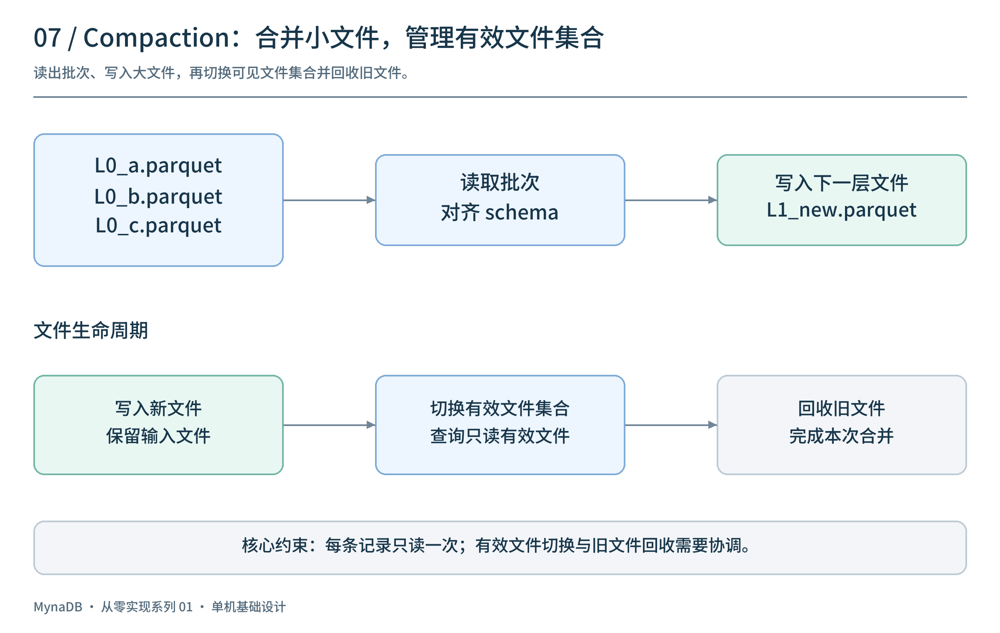
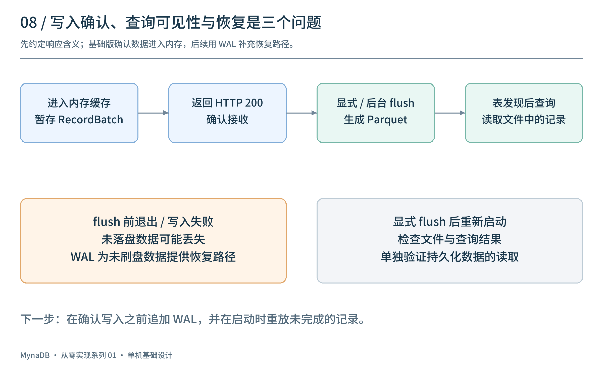

从一条监控指标开始：
cpu,service=web,host=server01 usage=23.5 1766793600000000000
我们希望通过 HTTP 写入它，再用 SQL 查询：
SELECT host, AVG(usage)
FROM demo.web.cpu
GROUP BY host
要做到这一点，第一版需要解决四件事：解析指标、组织内存数据、写成文件、把文件交给 SQL 引擎。
本文围绕 MynaDB 的单机基础设计展开，按实现顺序介绍这条链路。代码和接口用于解释设计，省略错误处理等细节，不作为某个历史标签的完整复现脚本。
1. 把第一版拆成四个模块
先让数据走完一个闭环：

各模块的职责如下：
| 模块 | 职责 |
|---|---|
| HTTP 接口 | 接收写入请求和 SQL，返回处理结果 |
| Parser 与 DataCache | 解析指标，按表和日期组织内存批次 |
| ParquetWriter | 将批次写入日期分区目录 |
| QueryEngine | 注册表，调用 DataFusion 执行 SQL |
Rust 的 Tokio/Axum 负责服务接入；Arrow 表达内存中的列式数据；Parquet 保存文件；DataFusion 提供 SQL 规划和执行。
第一版先查询已经落盘的数据。查询内存中尚未刷出的记录，需要再把写缓存接入查询引擎，这留到查询优化篇展开。
2. 定义数据模型：一条指标属于哪张表
Line protocol 把数据分成四部分：
cpu,service=web,host=server01 usage=23.5 1766793600000000000
│ └──────── tags ────────┘ └─ field ─┘ └── timestamp ──┘
└── measurement
measurement 表示指标名称；tags 表示主机、业务等维度；fields 保存采样值；timestamp 表示采样时间。
设计一个能容纳这些信息的内部结构：
struct Point {
measurement: String,
tags: HashMap<String, String>,
fields: HashMap<String, FieldValue>,
timestamp: i64,
}
enum FieldValue {
Float(f64),
Integer(i64),
Boolean(bool),
String(String),
}
接下来约定数据和 SQL 表名之间的关系：

例如，向 /write/demo 写入上面的指标：URL 中的 demo 作为 catalog，约定从 service=web 提取 schema，measurement cpu 对应 table，得到 demo.web.cpu。没有 service 时可以使用默认 schema。
同一条记录中的 host 保存为字符串列，usage 保存为浮点列，时间戳保存为时间列。表名映射应由明确规则决定，字段值则必须贯穿解析、缓存、落盘和查询。
3. 接收 HTTP 写入，按表和日期分组
写入入口可以设计为：
POST /write/demo
处理过程保持简单：
读取请求体 → 解析为 Point → 按表和日期分组 → 转为批次 → 加入缓存
缓存键同时包含逻辑表和日期：
struct PartitionKey {
catalog: String,
schema: String,
table: String,
date: i32,
}
// 每个分区积累多个列式批次
HashMap<PartitionKey, Vec<RecordBatch>>
同一请求可能包含多个指标、多个日期，所以要逐条计算分区键，再把相同键的数据放到一起。日期从采样时间按统一时区计算，例如统一采用 UTC。
这样，每个批次都属于一张表的一个日期分区，后续写文件时不需要重新猜测数据归属。
4. 用 Arrow 连接写入和查询
HTTP 按行接收数据，而分析查询往往只读取其中几列。Arrow 的 RecordBatch 可以把一批行转换为列数组：

例如，两条 CPU 指标会形成几组等长数组：
host: [server01, server02]
usage: [23.5, 42.0]
再用 schema 描述列名和类型：
let schema = Arc::new(Schema::new(vec![
Field::new("timestamp", DataType::Timestamp(TimeUnit::Nanosecond, None), false),
Field::new("host", DataType::Utf8, true),
Field::new("usage", DataType::Float64, true),
]));
let batch = RecordBatch::try_new(schema, arrays)?;
这是简化的字段集合。实际转换时，要先收集整个批次的 tags 和 fields，再按 schema 顺序构建数组，保证所有列的行数一致。
对于不同批次之间的列变化，可以采用下面的规则：

缺少某一列时补 NULL；已有列按目标 schema 的顺序排列；同名列出现不同类型时，按明确的类型策略处理。第一版可以先拒绝类型冲突，让行为更容易理解。
Arrow 在这里承担了一个重要作用：写缓存、文件写入和查询结果可以围绕同一种批次结构组织，减少各模块之间的数据转换。
5. 先缓冲，再批量写 Parquet
如果每次写入请求都生成一个文件，小请求会很快变成大量小文件。因此，先将 RecordBatch 放进缓存，积累到一定程度再执行 flush。

可以提供三种触发方式：
- 周期触发，例如每隔一段时间刷出缓存。
- 容量触发，例如达到缓存预算的 80% 时发出通知。
- 手动触发，例如
POST /flush，便于调试和验证。
如果缓存已满，就拒绝或限流新写入，让上游能够重试。缓存预算还应为解析、刷盘和查询预留空间，不能直接等同于进程的全部可用内存。
flush 后的目录结构如下：
data/
└── demo/
└── web/
└── cpu/
├── date=2025-12-27/
│ ├── L0_001.parquet
│ └── L0_002.parquet
└── date=2025-12-28/
└── L0_003.parquet
这里的文件名只是示意。日期目录用于组织分区，L0 表示刚刷出的原始文件。
写文件的核心步骤是：
let mut writer = ArrowWriter::try_new(file, batch.schema(), None)?;
writer.write(&batch)?;
writer.close()?;
如果同一文件包含多个 batch，就在关闭 writer 前逐批写入，并确保 schema 一致。某次写入失败时，待刷批次应保留或重新入队，不能直接视为已经持久化。
6. 把 Parquet 目录注册成 SQL 表
有了文件，还需要让查询引擎知道 demo.web.cpu 对应哪个目录。
QueryEngine 负责发现 catalog、schema 和 table，并将 Parquet 表注册到 DataFusion。对于日期分区目录，还要告诉表提供者 date 是分区列。

注册后，执行查询的核心调用很短：
let df = ctx.sql(sql).await?;
let batches = df.collect().await?;
DataFusion 返回 RecordBatch，HTTP 层再将其转换成 JSON。以后增加 Arrow Flight、MySQL 等查询入口时，可以继续复用 QueryEngine。
例如，下面的查询读取已经刷出的指标：
SELECT host, AVG(usage) AS avg_usage
FROM demo.web.cpu
WHERE date = '2025-12-27'
GROUP BY host
显式使用日期分区条件，便于检查分区选择行为。后续再考虑如何从时间范围自动推导分区，以及如何减少文件扫描。
要验证第一版是否正确，可以用一组很小的数据检查：写入两条已知指标，显式 flush，核对查询结果；再重启进程，用相同目录重复查询。这比单独检查 HTTP 状态或文件是否存在更有意义。
7. 用 Compaction 控制文件数量
持续写入会不断产生 L0 文件。Compaction 将多个小文件合并成较大的文件，减少后续读取时需要处理的文件数量。

基本流程是：读取输入文件、对齐 schema、写入新文件，再切换有效文件集合并回收旧文件。
这里需要维护一个不变量：同一批记录不能因为新旧文件同时存在而被重复读取。 文件可见性的切换和旧文件回收应分开设计；具体的清单机制放到后续文章展开。
第一版也需要限制合并并发和每次处理的数据量，避免后台任务挤占前台写入与查询资源。
8. 最后约定“写入成功”的含义
为了尽快跑通基础链路，本文采用“数据进入内存后确认接收”的设计。于是，接收成功、生成文件和查询可见是不同的时刻：

在尚未引入 WAL 时，未刷出的内存数据存在进程退出后丢失的风险。显式 flush 后重启再查，可以检查文件能否重新读取；崩溃恢复还需要另一套保证。
这就自然引出了第二篇：在确认写入之前记录 WAL，并在启动时重放日志，让尚未刷出的数据也有恢复路径。
到这里，第一版的核心结构已经清楚：用 Point 表达指标，用 RecordBatch 组织批次，用缓存衔接小写入和文件写出，用 Parquet 保存数据，再由 DataFusion 执行 SQL。后续的持久性、查询优化和集群能力，都可以围绕这条链路逐步补充。
项目源码：panbooks/mynadb · 中文文档。